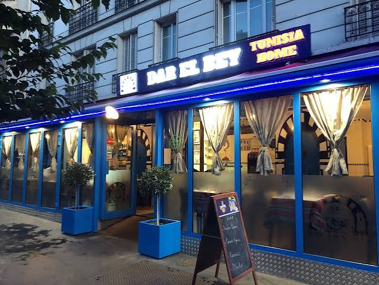

Bienvenue chez Dar El Bey
Situe au coeur de Tunis, le restaurant Dar El Bey vous accueille dans une ambiance chaleureuse et familiale. Notre chef prepare chaque jour des plats authentiques avec des produits frais du marche local, des epices traditionnelles et de l'huile d'olive extra vierge.

| Formule | Horaires | Tarif |
|---|---|---|
| Petit-dejeuner Tunisien (Assida, Oeufs, Cafe) | 08h00 - 11h00 | 15 DT |
| Dejeuner Express (Entree + Plat du jour) | 12h00 - 15h30 | 28 DT |
| Diner Gastronomique (Entree + Plat + Dessert) | 19h00 - 23h30 | 45 DT |